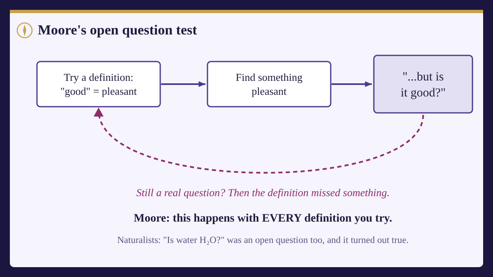

Card 1: The dream of a moral science
Science has a great track record. We used to have no idea what lightning was; now we know it's electricity. We used to think water was a basic element; now we know it's H₂O. Again and again, something mysterious turned out to be something natural that we could measure.
So here's a tempting idea: maybe goodness is like that too. Maybe "good" is just a name for some natural feature we can study, the way "water" is a name for H₂O. If we could find that feature, morality would become a science. Disagreements could be settled by evidence, like arguments about the boiling point of water.
People who think this is right are called moral naturalists. They think moral facts are real, and that they are natural facts: facts about pleasure, health, survival, what people need, or how societies thrive.
Card 2: Candidate definitions
People have proposed many answers to "what does good really mean?" Here are some of the most famous:
- Pleasure or happiness. Good just means whatever brings the most pleasure and the least pain.
- Survival or flourishing. Good means whatever helps living things, or humans, survive and thrive.
- Social approval. Good means what your society approves of.
- Desire. Good means what people want, or what they'd want if they thought it over.
Each one has something going for it. Pleasure really does seem good. Survival really does seem to matter. Each sounds almost obvious at first. That's exactly why one philosopher's attack on all of them caused such a stir.
Card 3: Moore's surprising answer
In 1903, a Cambridge philosopher named G. E. Moore wrote a book called Principia Ethica. He argued that every one of these definitions is a mistake. Not because pleasure or survival don't matter, but because "good" can't be defined at all. Here's how he put it:
If I am asked 'What is good?' my answer is that good is good, and that is the end of the matter. Or if I am asked 'How is good to be defined?' my answer is that it cannot be defined, and that is all I have to say about it.
From Principia Ethica by G. E. Moore (1903), Chapter I, §6. This eBook is for the use of anyone anywhere in the United States and most other parts of the world at no cost and with almost no restrictions whatsoever. You may copy it, give it away or re-use it under the terms of the Project Gutenberg License included with this eBook or online at www.gutenberg.org.
That sounds like a joke, or a dodge. But Moore had an argument behind it, and it's one of the most famous arguments in philosophy.
Card 4: The open question test
Moore's test goes like this.
Take any definition, say "good means pleasant." If that definition were truly what "good" means, then asking "Is this pleasant thing good?" would be a silly question, like asking "Is this unmarried man a bachelor?" The answer would be built into the words.
But it doesn't feel silly. It feels like a real question. People can sensibly wonder whether some pleasant thing is actually good. Since the question stays open, Moore concluded, "good" can't mean "pleasant."
And the same trick works on every definition. Moore even tried it on a cleverer one: good means "what we desire to desire" (what you'd want yourself to want). Fine, he said, but is it good to desire to desire that? That question makes just as much sense as the first one, so this definition fails too.
Notice what the test is not. It isn't about hunting for a nasty pleasant thing. Even for a perfectly harmless one, like a great afternoon with friends, "but is it good?" still makes sense to ask, even if the answer is probably yes. A question like "Is this bachelor unmarried?" doesn't make sense to ask at all.

Card 5: The "naturalistic fallacy"
Moore gave the mistake a name: the naturalistic fallacy. It means treating "good" as if it were the very same thing as some natural feature, like pleasure, just because the two often go together.
Moore used colour to explain. Yellow light has a certain wavelength, and scientists can measure it. But the yellowness you see isn't the same thing as a number on a measuring device. In the same way, good things may also be pleasant or healthy, but that doesn't mean "good" is pleasant or healthy.
So what is goodness, for Moore? A real feature of things, but a simple one that can't be broken into parts, and not a natural feature science could measure. People who agree with him are called non-naturalists: moral facts are real, but they're a different kind of fact.
Card 6: Fighting back
Naturalists didn't give up. Here are two of their best replies, in plain words.
"Discoveries feel like open questions too." Before chemistry, "Is water H₂O?" was a completely open question. People could sensibly doubt it. But water is H₂O; we just had to find out. Maybe "good" is the same: goodness could be some natural feature even if the connection isn't obvious from the words alone. Philosophers like Richard Boyd developed this reply.
"Moore made goodness spooky." If goodness isn't natural, how do we ever know about it? We can't see it, weigh it, or test it. Some critics think Moore swapped a hard question for a mysterious answer.
Moore's defenders reply that the water comparison doesn't quite fit: we found out what water is by doing experiments, and no experiment seems able to show what goodness is.
The debate is still going. That's why this question is worth your time.
Card 7: Real-world spark:Good = most likes?
Here's a definition people act on every day without saying it: good means whatever gets the most likes.
Run Moore's test. A prank video gets ten million likes for humiliating someone who didn't know they were being filmed. It's extremely liked. But is it good?
If that still feels like a real question (and for most people it does), then "good" can't just mean "liked." Popularity and goodness can come apart, which is exactly the gap Moore said every definition leaves.
Card 8: What to carry into the game
- Naturalism: goodness is a natural feature science could study.
- Non-naturalism: goodness is real but not natural, and can't be defined.
- The open question test: for any definition, ask "but is that good?" If the question still makes sense, the definition might not capture what "good" means.
Next, you'll feed definitions into the Open Question Machine and see which ones survive.